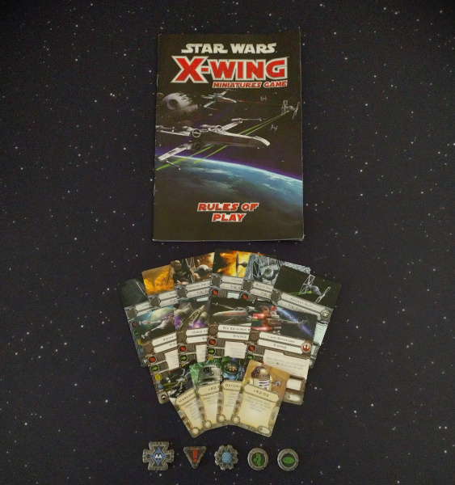
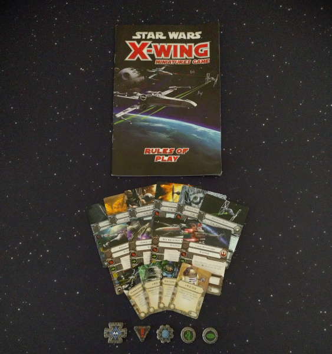
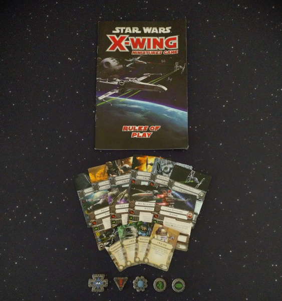

The When of Python
Grant Paton-Simpson – 2degrees
* [**Grant to start talking**]
* Hi everyone, my name is Grant, and this is Ben
* Thanks for coming to our talk on The When of Python
* We've been thinking a lot about the future of Python over the past few months
* ... and we're really excited to share with you some ideas we've had
The Promise of Python:
* So let's start off by considering one of the main promises of Python:
* That Python is...
* [*`CLICK`*] Simple
Simple?
Friendly & Easy to Learn
― python.org/about
print('Hello, world!')
Python Fits Your Brain
― Guido's theme for Pycon 2001
Beauty, Simplicity, Flexibility
― Kiwi PyCon
There should be one-- and preferably only one --obvious way to do it.
― The Zen of Python
Readability counts.― The Zen of Python
* [*`CLICK`*] It's a major selling point of the language
* [*`CLICK`*] We talk about how Hello World is so much simpler in Python than other languages
* We emphasize simplicity...
* [*`CLICK`*] at conferences
* [*`CLICK`*] and in the Zen of Python
* [*`CLICK`*] But is Python still simple?
* [*`CLICK`*] Well, readability is a big part of simplicity,
* ... so let's focus on that for a minute
What is Readability ?
Armed with basic language knowledge rapidly understand what code will do
* So what is readability?
* [*`CLICK`*] If code is readable,
* ... I should be able to quickly understand what code will do
* ... even if I only have a basic knowledge of the language.
However, ever-expanding language features...
Provide more than "one obvious way"
Make Python too big for your brain
Hurt readability!
* However, if you think about all the new features Python's been adding over the last few years...
* [*`CLICK`*] They provide more than **one** obvious way
* [*`CLICK`*] They make Python too big for your brain
* [*`CLICK`*] And therefore, they hurt readability!
namedtuple()
vs
NamedTuple
vs
@dataclass
* Consider namedtuples and data classes
* Three almost identical approaches to the same task in the standard library
concurrent.futures
vs
asyncio
vs
threading / multiprocessing
* And the same can be said for the different libraries available for concurrency
* We found a flow-chart which tries to simplify the choice
* It might well be correct but oh dear!
* [*`Switch to Ben`*]
Does it matter?
Having choices is useful!
* [*`Switch to Ben`*]
* But does any of this really matter?
* After all, having choices is useful
Storytime: X-Wing Miniatures Game

* Well, a few years ago I started playing the X-Wing miniatures game
* and the simplicity of the game was a major drawcard
* ...because it meant that I could easily teach my friends how to play!
The game kept getting better!
* and over time they kept adding new ships
* ...to keep the game fresh for veteran players
Fast-forward a few years...
* But fast-forward a few years of expansions
* ...the sheer volume of rules made the game unapproachable for beginners
"...it got more complicated , making it less easy to jump into the proverbial cockpit."
― starwars.com/news/x-wing-second-edition
* In the end, the game designers had to drastically simplify the game
* ...because it was just too complex
Learnability is a big part of Python's success
Python possesses a mix of qualities that makes it a good
candidate for universities. It has a
simpler syntax
than Java or C++, allowing novices to
start writing programs almost immediately .
“Python, which
started as a simple scripting language ,
as an alternative to Perl, has become mature. Its
ease of learning ,
its huge amount of libraries and its widespread
use in all kinds of domains, has made it the most popular
programming language of today,” said TIOBE CEO Paul
Jansen.
* Like X-Wing, learnability has been a big part of Python's success
* [*`CLICK`*] Python recently surpassed Java as the top learning language in universities
* [*`CLICK`*] and that success has been attributed to its simplicity
* [*`CLICK`*] just last year, Python became the most popular language on the TIOBE index
* [*`CLICK`*] and again, simplicity is arguably a major factor in that success
But how easy is it to learn modern Python?
In order to start reading Python, you must understand all commonly used features.
After a 1-day course, how comfortable would you be reading Python from 10 years ago vs today?
Type-hinting...
F-strings...
Walrus operator (:=)...
Positional-only parameters...
Structural pattern matching (match)...
...
* But how easy is it really to learn modern Python?
* [*`CLICK`*] Well, remember, in order to confidently read code,
* ...you must be familar with *all* the language features that you're likely to come across
* [*`CLICK`*] Consider how much more needs to be at least mentioned in a
Python crash-course today compared to just 10 years ago
* We have:
* ...
* And that's *just* in the last 10 years
Not everyone has the time to learn that much Python
Scientists
School Teachers
Data Analysts
* With so much more to learn, Python risks becoming unapproachable
to beginners,
* ...especially those who aren't full-time software engineers, like:
* [*`CLICK`*] Scientists
* [*`CLICK`*] School teachers
* [*`CLICK`*] and data analysts
Language creep threatens Python's popularity!
* By alienating those users that have made Python
so widespread,
* ...Python's language creep could ultimately
threaten its popularity.
So should we just stop extending Python?
Python must still adapt to survive and improve!
But it's really hard to remove old features
We need a way to shrink Python
* So should we just stop extending Python?
* [*`CLICK`*] Well, we still want Python to improve where possible
* [*`CLICK`*] But additions inevitably lead to language creep
* ...when we have to keep old features for backwards compatibility.
* [*`CLICK`*] What we really need is some way to shrink the Python language.
Can we shrink Python?
Languages can deprecate features and APIs
JavaScript, Java, C++, PHP
Python only deprecated 4 modules since 3.0 (2008) – PEP 4
* Ok, so maybe we could copy the JS community?
* They have "JS The Good Parts",
* ...which presented a subset of JS that is more readable and reliable.
* And the JS community loved it!
* [*`CLICK`*] Some languages are even more aggressive,
* ...deprecating features and APIs entirely.
* [*`CLICK`*] Contrast that with Python,
* ...which has only deprecated 4 modules since Python 3.0 in 2008
Python: The Good Parts?
* So should we just write "Python: The Good Parts"?
* Well, Python doesn't really have the same "bad parts" problem as JS
Not enough room for all the good parts
What parts of Python would you take with you?
* So what we're really saying is that
* ...there isn't enough room for **all* of Python's good parts
* Just like how Desert Island Discs asks
* ...which eight music albums you would take with you to a desert island...
* [*`CLICK`*] We need to ask ourselves:
* ..."What parts of Python should we take with us if we can't take it all?"
Everyday Python
The community defines a limited subset of Python for
everyday use
The community agrees to favour
Everyday Python in their code as much as possible
Beginners have confidence
in what they need to learn in order to
read most Python code
A smaller Python is more readable ,
is easier
to master, and speeds up
development time.
* Practically, we're proposing the Python community defines an Everyday Python
* [*`CLICK`*] That is, a limited subset of Python for everyday use
* [*`CLICK`*] And if we can agree to use Everyday Python as much as possible...
* [*`CLICK`*] then beginners will be able to read most Python code
* [*`CLICK`*] and all developers will benefit
* ...from having an agreed Everyday Python that is easier to **master**.
Everyday Python is a...
* So, what we're saying is that Everyday Python is a...
So let's constrict Python!
* So instead of writing "Python: The Good Parts",
* ...we propose establishing "The When of Python"
* ...a guide that answers the question of "When" you
should reach for the various features of Python.
* [*`Switch to Grant`*]
The When of Python
Almost always use
Everyday Python
Teach first
Sometimes use
Situational
Advanced users
Almost never use
Niche uses
Deprecated
Not taught
* [*`Switch to Grant`*]
* Specifically, we propose organising Python's features
into three tiers:
* [*`CLICK`*]
* Those that you should almost always use,
* ... the first tools you reach for
* Those that you should use less often,
* ... but that are still the best approach for certain use-cases
* And finally those that the community has decided
* ... should rarely if ever be used
* [*`CLICK`*] The first tier is what we'd consider "Everyday Python",
* ... and is what you'd teach first in an introductory Python course
* [*`CLICK`*] The second tier contains features that are mostly situational
* [*`CLICK`*] Finally, features in the third tier
* ... are reserved for very specific niche uses,
* ... or are considered obsolete.
* Now we're going to look at how some of Python's features
* ... could be organised using the "When of Python"
* Obviously these are just our opinions,
* ... and we welcome a healthy debate on these
The When of Python
(This is how we think Python should be used
* So, here's our When of Python
* We're going to work through each feature to explain our choices
* There are some general principles behind our decisions,
* ... but we'll elaborate at the end
String Formatting
(See: realpython.com/python-string-formatting )
* Let's start with string formatting
* [*`CLICK`*] First we had old style string formatting
* [*`CLICK`*] Then dot-format was added
* ... to address some issues with how some data types were handled
* [*`CLICK`*] And most recently, we've had f-strings,
* ... which have taken the benefits of dot-format
* ... and combined them with a nicer syntax
* [*`CLICK`*] Template Strings also exist,
* ... which are safest for the niche case of user-provided templates
String Formatting
f-strings
Concise , readable , covers most cases
.format()
Useful in certain situations : '...'.format(**kwargs)
Template()
The safe tool for the niche of user-provided template strings
%-formatting
Redundant now that we have f-strings
* So, we place these features onto the When of Python as follows:
* [*`CLICK`*] You should almost always use f-strings:
* ... they are concise, readable, and cover most cases
* [*`CLICK`*] Dot-format should be used less often now,
* ... but it's still useful for some cases, like unpacking arguments.
* [*`CLICK`*] Template strings are useful but only for user-provided templates.
* ... They're a good example of a feature that is a good part of the language
* ... but still belongs in the third tier
* [*`CLICK`*] And old-style string formatting
* ... should be considered redundant and obsolete
Data-Storage Objects
Original: collections.namedtuple
Rectangle = namedtuple('Rectangle', ['width', 'height'])
my_square = Rectangle(width=42, height=42)
Simpler, typed: typing.NamedTuple
class Rectangle(NamedTuple):
width: float
height: float
More versatile Data Classes:
@dataclass(frozen=True, order=True)
class Rectangle:
width: float
height: float
* Now let's move on to data-storage objects
* [*`CLICK`*] Originally, named tuples were the standard way
* ... to quickly define a Class for immutable objects
* ... that store a bunch of attributes
* [*`CLICK`*] When typing was introduced, we got a cleaner syntax for defining namedtuples
* [*`CLICK`*] And finally,
* ... the more recently introduced Data Classes fulfill essentially the same role as namedtuples,
* ... but can be used for both mutable and immutable objects
* ... depending on the `frozen` argument.
Data-Storage Objects
@dataclass
Simple syntax for
both mutable and immutable objects
NamedTuple/namedtuple()
Only immutable objects.
* So, in The When of Python,
* [*`CLICK`*] we think Data Classes should be the
everyday, go-to tool for data-storage objects,
* [*`CLICK`*] while namedtuples should only be rarely used.
Structural Pattern Matching: The Promise
match json_shape:
case {'type': 'circle', 'radius': radius}:
return Circle(radius)
case {'type': 'rectangle', 'dimensions': [width, height]}:
return Rectangle(width, height)
case _:
raise ValueError('Not a shape')
Python finally gets a concise switch statement !
Elegantly unpack nested data structuresStealing another handy feature from functional languages
* Now, let's look at one of Python's most recent features:
* ... structural pattern matching
* Here we have an example of using a `match` statement
* ... to check the structure of a dictionary
* ... and then unpack values from it.
* There's some real benefits structural pattern matching gives us:
* [*`CLICK`*] For one, with literal values in cases,
* ... we have a concise switch statement
* [*`CLICK`*] We can also really elegantly unpack
* ... complex and deeply nested data structures
* [*`CLICK`*] It's another case of stealing another handy feature from functional languages
* ... - just like list and dictionary comprehensions etc
Structural Pattern Matching: The Reality
* But all these benefits come at a cost
* [*`CLICK`*] Match introduces another mini-language within Python
* [*`CLICK`*] And that mini-language has some really subtle gotchas:
* For example, if you forget the parentheses after a type name,
* ... you'll end up redefining that type name for all following code!
* [*`CLICK`*] Because this looks really similar to normal Python code,
* ... bugs like that will be really hard to see
* ... unless you're really confident in the match mini-language
Structural Pattern Matching
match
Provides simpler syntax for complex unpacking,
but dangerous if you don't fully understand
its syntax and gotchas .
* So overall, because `match` requires memorising too much
new syntax
* ... in order to use it safely,
* ... we think it shouldn't be part of Everyday Python
* Instead, it should be left for use-cases
* ... with lots of tricky data structure unpacking,
* ... like parsing abstract syntax trees
* [*`Switch to Ben`*]
Concurrency
threading / multiprocessing:
def download_post(post_num):
url = f'https://jsonplaceholder.typicode.com/posts/{post_num}'
return requests.get(url).json()
posts = {}
post_nums = range(5)
threads = [
threading.Thread(
# Make post_num an explicit argument to avoid late-binding
target=lambda post_num: setitem(posts, post_num, download_post(post_num)),
kwargs={'post_num': post_num},
) for post_num in post_nums
]
# Start all the threads
for thread in threads:
thread.start()
# Wait for all threads to finish
for thread in threads:
thread.join()
# Order by post_num
print([posts[post_num] for post_num in post_nums])
Too much and too dangerous for a simple task!
* [*`Switch to Ben`*]
* Now, let's look at Python's options for concurrency
* Originally, Python only had the low-level threading and multiprocessing modules
* But look how much code is needed just to perform a simple task
* ...like downloading a bunch of files in parallel.
* [*`CLICK`*] There's just too much going on here,
* ...not to mention the dangerous cross-thread data mutation hiding in there
Concurrency: concurrent.futures
Simpler interface for both
threading and multiprocessing:
def download_post(post_num):
url = f'https://jsonplaceholder.typicode.com/posts/{post_num}'
return requests.get(url).json()
with concurrent.futures.ThreadPoolExecutor() as executor:
posts = executor.map(download_post, range(5))
print(list(posts))
Easy to refactor existing code:
Practical Python Async for Dummies
* About 10 years ago, we got the concurrent futures module
* ...which radically simplifies that file downloading code
* [*`CLICK`*] In essence, the parallel processing is reduced to just this single line
* [*`CLICK`*] And I can even swap out the ThreadPoolExecutor for a
ProcessPoolExecutor
* ...to use processes instead of threads if I want to leverage more CPU cores.
* [*`CLICK`*] So concurrent futures makes it really easy to refactor existing code
to be concurrent,
* ...and to see how, have a look at the simple patterns
in Grant's Kiwi PyCon talk from a few years ago.
Concurrency: asyncio
An alternative paradigm for
single-process concurrency
that avoids overheads of threads:
async def download_post(session, post_num):
url = f'https://jsonplaceholder.typicode.com/posts/{post_num}'
async with session.get(url) as response:
return await response.json()
async def main():
async with aiohttp.ClientSession() as session:
return await asyncio.gather(*[
download_post(session, post_num) for post_num in range(5)
])
print(asyncio.run(main()))
A step backwards for readability
and learnability ?
* More recently, asyncio was introduced to Python.
* But look at all the new `async` syntax you need to learn
* ...just to rewrite the file downloading code
* Even the `download_post` function needs to be redefined
* ...to use the necessary async building blocks.
* [*`CLICK`*] So is asyncio actually a step backwards for readability and learnability?
Concurrency: asyncio
The learning curve on [async] is enormous
double the size of the language
async is the future ; threading is so hard to get right [and] so expensive.
― Raymond Hettinger, PyBay 2017
* Well, it's interesting to look at Raymond Hettinger's comments on asyncio,
* ...given he is a Python core developer and respected Python teacher
* He noted that it has an *enormous* learning curve,
* ...and that we might end up *doubling* the size of Python
* ...in order to provide async-compatible versions of many existing tools.
* Nonetheless, he expected that asyncio would play a large part in Python's future.
* While it may be important for certain use cases,
* ...we believe the cost of learning asyncio is too high for most Python developers.
Concurrency
concurrent.futures
Simple interface for threads and processes, but not needed everyday
asyncio
Steep learning-curve , but best option for niche use-cases
threading / multiprocessing
Low-level APIs for advanced use-cases
* So,
* [*`CLICK`*] we think that concurrent futures should be the
preferred tool for concurrency,
* ...given that it has a simple interface for both single and multi-process concurrency.
* Note we don't consider it Everyday Python,
* ...as the need for concurrency *at all* is still situational.
* [*`CLICK`*] With their steeper learning curves,
* ...we believe asyncio, threading, and multiprocessing libraries
* ...should only be used for niches where
their particular benefits are needed.
for else
Which is it?
for animal in animals:
if animal == my_pet:
break
else:
print('No pet found :(')
for animal in animals:
if animal == my_pet:
break
else:
print('Pet found :)')
Why not just remove the ambiguity?
found_pet = False
for animal in animals:
if animal == my_pet:
found_pet = True
break
if not found_pet:
print('No pet found :(')
* Ok, now let's consider the for loop's optional else block
* [*`CLICK`*] Looking at this code,
* ...it's not immediately obvious whether the else block runs if the break is hit,
* ...or if it is not hit
* [*`CLICK`*] In practice, it's clearer to just remove the
ambiguity for the reader
* ...and set a variable before breaking
for else
for else
Specialised and arguably
confusing . Easily replaced with
common language features. Guido said he would use a time machine to remove it.
* So overall, we're better off without `for else`
* Guido even said he would go back in time and remove it
Misc
Comprehensions
Simple , readable syntax for building lists, dictionaries, etc.
1_000_000
Easy to learn . Makes numbers
safer to read :
1_000_000 vs 1000000
Type Hinting
Improves documentation and
safety of critical code.
Some or all may be Everyday Python in the future.
lambda
Conventional in languages like JS, but not Python.
Still a useful and versatile tool
for simple sort keys, Pandas apply, etc.
:=
PEP 572 says to prefer = when either can be used.
* To finish off constructing our When of Python, let's quickly run through a few more Python features
* [*`CLICK`*] List and dictionary comprehensions etc. are great,
* ...they should be used all the time
* [*`CLICK`*] Formatting large numbers with underscores makes them much easier to read,
* ...and there's barely any syntax to remember.
* [*`CLICK`*] Type Hinting; while it's helpful for documentation and type safety,
* ...the general opinion seems to be to only use it in critical code
* ...That said, it's possible some level of hinting will move into Everyday Python
in the future.
* [*`CLICK`*] While anonymous lambda functions are really common in a lot of other
languages, especially functional languages,
* ...they've never really been "Pythonic".
* ...That said, they still have their uses, so they're a situational tool.
* [*`CLICK`*] And finally, the "walrus" operator for assignment expressions
* ...should very rarely be used
* ...even its PEP says to prefer plain old equals wherever possible.
The When of Python
* [*`slow down`*]
* So here is the whole When of Python again.
* Hopefully that gives a sense of where we're heading
with the idea of constructing a "When of Python"
* But if you disagree with any of these points, feel free to tell us why after
How we made those decisions
Cull alternatives (create "one obvious way")
Keep the simple
Prefer versatility
Remove the unsafe
Shrink Python (define Everyday Python)
Prioritise common programming needs
Prefer easy to learn/remember
* Now let's take a step back and look at some principles
we used to arrange features in our When of Python
* [*`CLICK`*] Firstly, where multiple approaches existed for a particular task,
* ...we aimed to keep only one approach in Everday Python,
* ...and we preferred approaches that are simple, versatile, and safe to use.
* [*`CLICK`*] Secondly, to achieve our goal of a simple Everyday
Python,
* ...we had to constrict Python.
* ...Doing so required prioritising the common needs of programmers
* ...and preferring features that are easy to learn and remember.
Out with the old, in with the new?
Often new approaches obsolete the old :
But sometimes extensions add complexity :
Or come with risks if not used very carefully:
Structural Pattern Matching
* It's interesting to consider whether the most recent Python
features are always the best fit for Everyday Python
* [*`CLICK`*] In some cases new features provide an all-around better
experience for developers.
* [*`CLICK`*] But sometimes new features aren't worth the cost of their additional
complexity for them to be included in Everyday Python.
* [*`CLICK`*] Some new features can actually be dangerous if you don't learn them properly and completely.
* So it's not just a case of "new features bad"; or "new features good"
* Some features are like medicine
* ...they're only good when used strictly as appropriate
* [*`Switch to Grant`*]
Where to from here?
→ Wide collaboration
→ Consensus
→ Standardisation
A perfect job for the Python Steering Council :
Maintain the quality and stability of the Python language…
Seek consensus among contributors and the core team ― PEP 13
* [*`Switch to Grant`*]
* So where to from here for the When of Python?
* [*`CLICK`*] We need to start getting input from a wide range of Python users
* [*`CLICK`*] and eventually build toward a consensus
* ... for what the When of Python should look like
* [*`CLICK`*] then finally, we can adopt and standardise it
* [*`CLICK`*] This sounds like a perfect job for the Python Steering Council,
* ... which took over responsibility for the design of Python from Guido
How about a PEP?
* The steering council could standardise a When of Python as a PEP
* It could then act as a living standard, like PEP 8.
* ... PEPs for new features could include recommendations
* ... for how The When of Python should be updated,
* ... encouraging authors to think through
* ... how their additions should affect Everyday Python.
Python has a strong history of using constructs to:
Reduce disagreements
Not leave convention to chance
The When of Python should be the next Python construct
* As Chris's keynote highlighted, Python has effectively used language constructs to:
* [*`CLICK`*] ... reduce disagreements in the community
* [*`CLICK`*] ... and not leave conventions to chance
* [*`CLICK`*] We see the When of Python as continuing on that legacy,
* ... by being the next Python construct
Why not just leave it to convention?
Python is no longer a single, cohesive community
Conventions are slower to spread organically
Conventions may diverge , creating confusion
Explicit guidance is better than implicit convention
* But why not just leave Python's usage up to community convention?
* [*`CLICK`*] Python is no longer a niche, enthusiast language with a tight community
* ... - you have scripters, web developers, scientists, and so on
* [*`CLICK`*] So we can't wait for clear conventions to slowly emerge organically
* [*`CLICK`*] Different sub-communities may adopt different conventions,
* ... leading to widespread confusion
* [*`CLICK`*] Having explicit guidance from Python's top
* ... sends a clear message to teachers, writers, bloggers, Stack Overflowers, etc.
* Explicit guidance is better than implicit convention
What are current Python conventions?
We decided to look!
Cloned recently updated Python repos from GitHub
Searched the ASTs of Python files for feature usage
Looked at 1000s of repos over various explorations
We'll release our code soon - when it's tidier :-)
* All of this got us wondering,
* ... what *are* the real Python conventions out there in the wild today?
* [*`CLICK`*] So we decided to take a look
* We scraped GitHub for a whole bunch of recently updated Python repos
* ... and searched abstract syntax trees for various Python features
* We actually had quite a lot of fun seeing what was out there,
* ... so we'll be releasing the code we used soon
* ... in case anyone else wants to try it out too
Python Feature Usage
datetimefor elsedataclassesType-hinting
asyncioconcurrent futures
And that's excluding github-stats repos
* So, what did we find?
* [*`CLICK`*] Firstly, to set a baseline,
* ... we wanted to look at how often you'd see a reasonably essential module used
* ... so we had a look at the standard library datetime module,
* ... and we found that about a third of repos use it.
* [*`CLICK`*] Next, we looked at `for else`
* [*`CLICK`*] Despite Guido saying he'd remove it with a time machine,
* ... about 1 in 10 active Python GitHub repos still appear to be using it!
* [*`CLICK`*] Then we wanted to see how often dataclasses are used.
* ... They were only added four years ago,
* ... but given their usefulness we'd expect them to be fairly frequently used,
* ... especially in the recently updated repos we're scraping
* [*`CLICK`*] But they're not even used as often as `for else`!
* [*`CLICK`*] Type-hinting has only been with us 3 more years than dataclasses
* [*`CLICK`*] and yet it has been much more widely adopted
* [*`CLICK`*] Finally, we wanted to see how often you might come across asyncio
* ... and all the new syntax it brings with it
* [*`CLICK`*] And we were pretty surprised to find it was used in over 10% of repos!
* ... That means, if you're just learning Python,
* ... and your friend shows you a Python GitHub repo they're working on,
* ... there's a 1 in 10 chance you're going to come across asyncio
* [*`CLICK`*] And that's excluding the copy-pasted stats code that everyone puts on their GitHub profile,
* ... which happens to use asyncio
* [*`CLICK`*] To put that in perspective, we also looked at concurrent futures,
* ... which is the simplest concurrency option for a large number of cases,
* ... maybe even most
* [*`CLICK`*] It wasn't used even half as often as asyncio
What's using so much asyncio?
* This got us wondering even more,
* ... what are so many projects using asyncio for?
* [*`CLICK`*] bearing in mind that existing learning material suggests that its complexity is rarely needed?
What's using so much asyncio?
We reviewed >100 repos with >100 stars using asyncio:
62% appear to have a strong case for using asyncio17% are supporting or testing for asyncio18% probably don't need asyncio
* To get a feel for asyncio's usage,
* ... we drilled into 100 fairly popular repos with over 100 stars
* [*`CLICK`*] and about two thirds seemed to have good reasons for using asyncio
* ... be it setting up socket servers or providing async APIs to services
* [*`CLICK`*] However, almost a fifth seem to be not primarily focussed on async,
* ... but are providing asyncio-compatible interfaces
* [*`CLICK`*] and almost another fifth seem to be using asyncio in a simple context
* ... where concurrent futures might have achieved the same goal with simpler code,
* ... such as running requests or processes in parallel
* So overall, there's a lot of asyncio usage out there,
* ... and it seems like much of it could be a lot simpler
* And this is just looking at the popular repos with at least 100 stars,
* ... there might be a lot more asyncio usage in the rest
* ... that could be replaced with concurrent futures
A When of Python could help fix these stats
* A When of Python could help fix these stats
Monitoring how a language is used could be a game-changer for language design
Understand conventions – don't just ask, look as wellSpot splintering to target community outreachMeasure effectiveness of language guidance
There currently seems to be no such coordinated monitoring of Python usage
* We also feel like we've barely scratched the surface with this analysis
* Language design no longer needs to make judgements in isolation,
* [*`CLICK`*] ... but can now reflect on how users make use of Python
* [*`CLICK`*] You could identify diverging conventions between communities,
* ... and respond proactively
* [*`CLICK`*] and you could see what impact
* ... community guidance like a When of Python
* ... is actually having on Python users
* [*`CLICK`*] There currently doesn't seem to be
* ... any consistent monitoring of Python usage in the wild,
* ... and we think that could be another real opportunity for the Steering Council
Asking "When?" makes language decisions easier
New feature? →
Yes or No When or No
Language features can be added for niche uses without expanding Everyday Python
* And in fact, we believe the When of Python
* ... could actually make the Steering Council's task of language design
* ... *easier* and less fraught
* [*`CLICK`*] Instead of deciding between Yes or No for a new feature
* [*`CLICK`*] instead we could be deciding between When or No
* [*`CLICK`*] Decisions no longer have to be a blanket Yes
* ... - not everything that is added belongs in Everyday Python
When or No
* In summary, the choice is "When or No"
* [*`Switch to Ben`*]
Where else to ask "When?"
Project/team style guides
Teaching material
Blog posts
Docs and blog posts too often focus on
how to use rather
than when
― Brandon Rhodes, code::dive 2019, regarding Mock
* [*`Switch to Ben`*]
* We also believe that asking When Python features should be used
is important in other contexts as well
* For example:
* [*`CLICK`*] in your project or team's style guide,
* [*`CLICK`*] in teaching material,
* [*`CLICK`*] or in blog posts.
* [*`CLICK`*] Brandon Rhodes, a respected voice in the Python community,
* ...recently highlighted how much has been written on "how" to use Mocks for testing,
* ...and how little has been written on "when" they should be used.
* In general, blogs should put more emphasis on **when to** and **when NOT to** use features,
* ...alongside discussion of how to use those features
Why stop at language features?
When to use libraries/frameworks?
When to test?
When to document?
* And why stop at language features?
* We can help define best practices for ourselves and others
by deciding:
* [*`CLICK`*] When to use different libraries
* [*`CLICK`*] When to use different approaches to testing
* [*`CLICK`*] and When to write different kinds of documentation
Takeaways
Python isn't as simple as it used to be
Language creep could cost Python its popularity
We need to constrict Everyday Python without giving up useful features
Adopting a When of Python would simplify Python for beginners and experienced developers alike
Asking "When or No " could even make language decisions easier
* Finally, to summarise what we've looked at today:
* [*`CLICK`*] Python isn't as simple as it used to be
* [*`CLICK`*] Language creep could cost Python its popularity
* [*`CLICK`*] We need to constrict Everyday Python without giving up useful features
* [*`CLICK`*] By adopting a When of Python, we can simplify Python
* ...for both beginners and experienced developers
* [*`CLICK`*] Being able to ask "When or No"
* ...could even make future language design decisions easier and less fraught
Thanks for Listening
Thoughts? Questions? Opinions?
* Thanks very much for listening
* We'd love to hear your questions and opinions
* Is there anything you'd do differently? Anything you'd like to add?
* EXTRA NOTES BELOW
* 2155 repos in final analysis
Post-Conference Refinements
We had lots of great conversations and feedback at Kiwi
Pycon 2022 that led us to refine the structure of the When
of Python
The following slides present these new ideas
Common Python
The Python features every coder writing or reading Python should understand
Especially useful for teachers and anyone learning Python
Situational Python
The Python features that are useful
not for everyone or not all the time
It depends on the situation , for example:
Web development might need very different features than scientific Python, e.g. asyncio
Advanced library code might need advanced features, e.g. low-level threading / multi-processing
Everyday Python is Personal
Your Everday Python is Common Python plus whatever you need from Situational Python in your application domain
A web developer making high-concurrency applications will have a different Everyday Python than an astronomer
Deprecated Python
The Python features we should avoid using wherever possible
Existing better alternatives should be recommended
 
